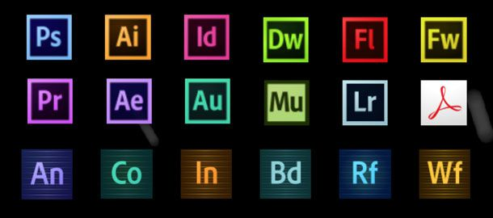

Welcome, Guest!
My name is Jonathan Rico. I am a junior at California State University-Monterey Bay (CSUMB). My major is business with a concentration in marketing. I am on track to graduate in Spring 2018.
I was born and raised in Salinas, California and I have lived there my whole life. I grew up with my father, mother, older brother and older sister. Currently, I live at my parent's house along with my mom, my dad, and my grandmother. We also have one pet chihuahua.
I spend most of my free time hanging out with my friends. When I have free time to myself, I usually work in Photoshop and in Premier Pro on several projects for a community. During the summer, I run various community events.
Some of my hobbies include: working in Photoshop, working in Premier Pro, tournamnet organizing, working out, watching sports, and reading. My favorite sports teams include the Los Angeles Lakers, San Francisco Giants, and the Oakland Raiders.
Some of my favorite books include the Harry Potter series, 1984, and Watership Down. Although it's been a while since I've picked up a book, I still enjoy being outside in my backyard as I read a book whenever I have the free time to do it. I usually do this during the summer since the weather is great and because it's when I have no worries of any assignments I need to complete.


You can contact me via e-mail at jyzquierdorico@csumb.edu.
I attended and graduated from Alisal High School. I then began attending California State University, Monterey Bay and have studied at CSUMB since fall 2014. The classes I have completed while I have been at CSUMB include:
-
Business Law
Financial Accounting
Managerial Accounting
Business Ethics in Action
Finance
Bussiness Operations Management
Information Systems
Ethics in Action
Entrepeneurship
Marketing
Marketing Reasearch
*Concentration requirements in bold
Educational Background
| Year | School | Level |
|---|---|---|
| 2010-2014 | Alisal High School Salinas, CA School Link |
High School |
| 2015 (Summer Only) | Hartnell Salinas, CA School Link |
College |
| 2014-Present | California State University, Monterey Bay Marina, CA School Link |
College |
As of the last time this website was updated, I have not worked a paid job. However, I have worked as volunteer at my former high school, Alisal High School. I have also volunteered at the local YMCA as a children's basketball coach.
I am currently working on my own social media events. The events are held for 1-3 weeks and have garnered a steady amount of interest and have a total of over 1,000 pariticpants. At this point in time, I am working on a social media strategy for my next event and planning advertisements that are meant to raise event awareness and also communicate what the event is in as few words as possible.
I intend to apply for an internship for over the summer or a job starting next month. I know it is important to have work experience so I am now focused on dedicating my time towards job or internship opportunities that are related to my carrer choice.


Adobe Creative Cloud Product Line

This is a table that ranks my favorite deserts.
| Rank | Food |
|---|---|
| 1 | Donuts |
| 2 | Chocolate Chip Cookies |
| 3 | Cake |